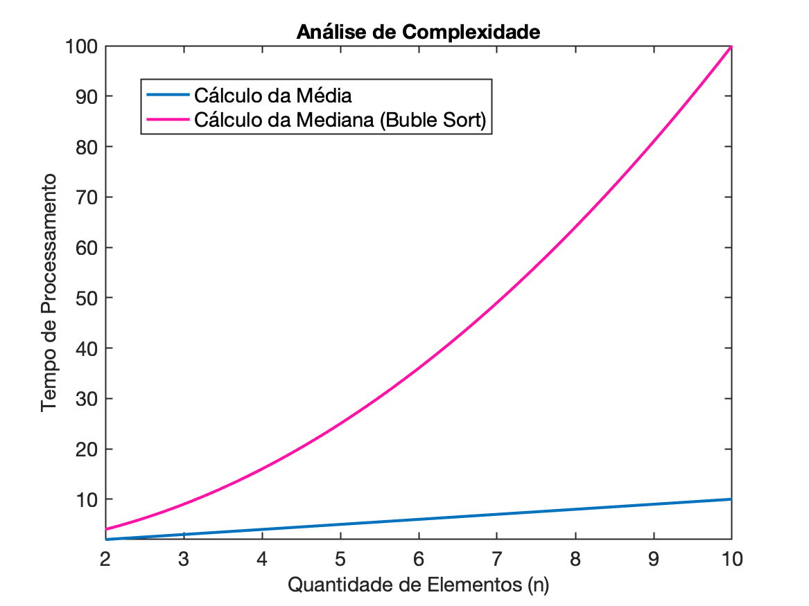
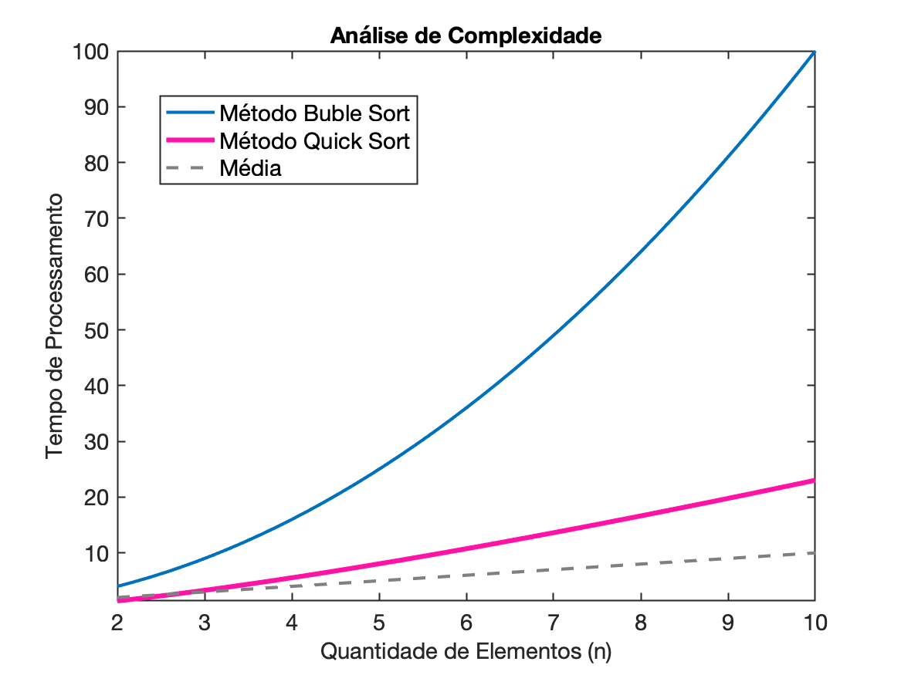

Média x MedianaCódigo ExemploDetalhes do códigoDiferença entre os cálculosMétodos de OrdenaçãoFunção qsortBubble Sort no ArduinoSobrecarga ComputacionalAnálise de complexidadeComparaçãoEstimativa da maior diferençaExemplo práticoOtimizaçãoImplementado QuicksortUsos
A diferença entre o valor médio (ou média) e a mediana está no modo como eles resumem um conjunto de dados:
Valor médio (média aritmética): É a soma de todos os valores dividida pelo número total de valores. Ele é influenciado por valores extremos (outliers).
Mediana: É o valor central de um conjunto de dados ordenado. Se o número de dados for ímpar, a mediana é o valor do meio. Se for par, é a média dos dois valores centrais. A mediana é menos sensível a valores extremos.
Segue um exemplo de programa em C que gera números aleatórios, calcula a média e a mediana de um conjunto de dados:
x// Função de comparação para usar com qsortint compare(const void *a, const void *b) { return (*(int*)a - *(int*)b);}// Função para calcular a médiadouble calcular_media(int arr[], int tamanho) { int soma = 0; for (int i = 0; i < tamanho; i++) { soma += arr[i]; } return (double)soma / tamanho;}// Função para calcular a medianadouble calcular_mediana(int arr[], int tamanho) { // Ordenar o array qsort(arr, tamanho, sizeof(int), compare); if (tamanho % 2 == 0) { // Se o número de elementos for par, a mediana é a média dos dois valores centrais return (arr[tamanho / 2 - 1] + arr[tamanho / 2]) / 2.0; } else { // Se o número de elementos for ímpar, a mediana é o valor central return arr[tamanho / 2]; }}int main() { int tamanho = 10; int valores[tamanho]; // Inicializa a semente do gerador de números aleatórios srand(time(0)); // Gera números aleatórios entre 0 e 100 printf("Valores gerados: "); for (int i = 0; i < tamanho; i++) { valores[i] = rand() % 101; printf("%d ", valores[i]); } printf("\n"); // Calcula e exibe a média double media = calcular_media(valores, tamanho); printf("Média: %.2f\n", media); // Calcula e exibe a mediana double mediana = calcular_mediana(valores, tamanho); printf("Mediana: %.2f\n", mediana); return 0;}rand() para gerar números entre 0 e 100.calcular_media() soma todos os elementos e divide pelo número total de valores.calcular_mediana() ordena os valores com qsort() e, dependendo se o tamanho do array é ímpar ou par, calcula o valor central.qsortA função qsort ("Quick Sort") já faz parte da biblioteca padrão do C (stdlib.h), então não é necessário implementar o código de ordenação manualmente. A função qsort() pode ser usada diretamente para ordenar arrays de maneira eficiente.
qsort:
qsort tem a seguinte sintaxe:xxxxxxxxxxvoid qsort(void *base, size_t num, size_t size, int (*compar)(const void *, const void *));Parâmetros:
base: ponteiro para o primeiro elemento do array.num: número de elementos no array.size: tamanho em bytes de cada elemento.compar: função de comparação que define a ordem dos elementos.No código anterior, foir importada a biblioteca stdlib.h, que contém a função qsort(). A função de comparação compare() já está escrita e fornecida no código. Essa função compara dois inteiros para que qsort() saiba como ordenar os elementos.
Outros métodos de ordenação podem ser usados como Método da Bolha ("Buble Sort") ou Método da Inserção.
Se você está programando em C para Arduino, onde a função qsort() da biblioteca padrão não está disponível, será necessário implementar sua própria função de ordenação. A seguir, é apresentado um código que implementa as funções calcular_media e calcular_mediana, além de uma simples função de ordenação (bubble sort) necessário para calcular a mediana.
Aqui está o código modificado para Arduino:
xxxxxxxxxx// Função para calcular a médiadouble calcular_media(int arr[], int tamanho) { int soma = 0; for (int i = 0; i < tamanho; i++) { soma += arr[i]; } return (double)soma / tamanho;}// Função para calcular a medianadouble calcular_mediana(int arr[], int tamanho) { // Ordenar o array usando bubble sort for (int i = 0; i < tamanho - 1; i++) { for (int j = 0; j < tamanho - i - 1; j++) { if (arr[j] > arr[j + 1]) { // Troca os elementos int temp = arr[j]; arr[j] = arr[j + 1]; arr[j + 1] = temp; } } } // Verifica se o tamanho é par ou ímpar para calcular a mediana if (tamanho % 2 == 0) { // Se for par, retorna a média dos dois valores centrais return (arr[tamanho / 2 - 1] + arr[tamanho / 2]) / 2.0; } else { // Se for ímpar, retorna o valor central return arr[tamanho / 2]; }}void setup() { Serial.begin(9600); int tamanho = 10; int valores[tamanho]; // Gera números aleatórios entre 0 e 100 randomSeed(analogRead(0)); // Usa o ruído do pino analógico para inicializar a semente do gerador de números aleatórios Serial.println("Valores gerados: "); for (int i = 0; i < tamanho; i++) { valores[i] = random(0, 101); Serial.print(valores[i]); Serial.print(" "); } Serial.println(); // Calcula e exibe a média double media = calcular_media(valores, tamanho); Serial.print("Média: "); Serial.println(media); // Calcula e exibe a mediana double mediana = calcular_mediana(valores, tamanho); Serial.print("Mediana: "); Serial.println(mediana);}void loop() { // Não há nada a ser feito no loop}Detalhes do código:
Função calcular_media: Soma todos os valores do array e divide pelo número de elementos, retornando a média.
Função calcular_mediana:
Usa o algoritmo bubble sort para ordenar os elementos do array. Este algoritmo é simples e fácil de implementar, embora não seja o mais eficiente.
Após a ordenação, verifica se o tamanho do array é par ou ímpar:
Geração de números aleatórios: A função randomSeed(analogRead(0)) usa a leitura de um pino analógico para inicializar a semente do gerador de números aleatórios. Os valores são gerados com random(0, 101) e variam de 0 a 100.
Saída: O programa imprime os valores gerados, a média e a mediana no monitor serial.
Esse código pode ser carregado diretamente no Arduino usando a IDE. No loop principal (loop()), não há necessidade de ação contínua, pois todo o trabalho é feito no setup().
Calcular a mediana geralmente envolve uma sobrecarga computacional maior que calcular a média, principalmente porque a mediana exige que os dados sejam ordenados, enquanto a média pode ser calculada diretamente com uma única passagem pelos dados.
Calcular a média:
Calcular a mediana:
Acompanhe no gráfico abaixo:

Para estimar a maior diferença possível, consideremos o tempo de execução em função do número de elementos .
Se usarmos uma proporção entre as duas complexidades, podemos dizer que para grandes valores de , o tempo necessário para calcular a mediana será aproximadamente proporcional ao quadrado do tempo para calcular a média.
Em termos de fator de diferença:
Portanto, a maior diferença possível entre o tempo de cálculo da mediana e da média será proporcional ao número de elementos (n). Isso significa que se você tem 1000 elementos, o cálculo da mediana pode ser até 1000 vezes mais lento do que o cálculo da média, dependendo do algoritmo de ordenação usado.
Caso a sobrecarga computacional para o cálculo da mediana seja uma preocupação, você pode usar algoritmos de ordenação mais eficientes, como o quicksort ou o heapsort, que têm complexidade , reduzindo o fator de diferença para algo entre O e . Isso ainda será mais lento que a média, mas muito mais eficiente que o bubble sort.

O método quicksort é um algoritmo de ordenação eficiente que usa a técnica de divisão para conquistar ("divide to conquer"). Aqui está um exemplo de implementação do quicksort em C, que pode ser utilizado para ordenar um array de inteiros:
xxxxxxxxxx// Função para trocar dois elementosvoid troca(int *a, int *b) { int temp = *a; *a = *b; *b = temp;}// Particiona o array e retorna o índice do pivôint particionar(int arr[], int baixo, int alto) { int pivo = arr[alto]; // Escolhe o último elemento como pivô int i = (baixo - 1); // Índice do menor elemento for (int j = baixo; j < alto; j++) { // Se o elemento atual é menor ou igual ao pivô if (arr[j] <= pivo) { i++; // Incrementa o índice do menor elemento troca(&arr[i], &arr[j]); // Troca os elementos } } troca(&arr[i + 1], &arr[alto]); // Coloca o pivô na posição correta return (i + 1); // Retorna o índice do pivô}// Função recursiva para implementar o quicksortvoid quicksort(int arr[], int baixo, int alto) { if (baixo < alto) { // Particiona o array e obtém o índice do pivô int pivoIndex = particionar(arr, baixo, alto); // Chama recursivamente para as duas metades quicksort(arr, baixo, pivoIndex - 1); quicksort(arr, pivoIndex + 1, alto); }}// Função para imprimir o arrayvoid imprimirArray(int arr[], int tamanho) { for (int i = 0; i < tamanho; i++) { printf("%d ", arr[i]); } printf("\n");}int main() { int valores[] = {34, 7, 23, 32, 5, 62}; int tamanho = sizeof(valores) / sizeof(valores[0]); printf("Array original: "); imprimirArray(valores, tamanho); quicksort(valores, 0, tamanho - 1); printf("Array ordenado: "); imprimirArray(valores, tamanho); return 0;}Detalhes do código:
Função troca: Troca dois elementos usando ponteiros.
Função particionar:
Função quicksort:
Função imprimirArray: Imprime os elementos do array.
Função main:
quicksort para ordenar o array.Você pode compilar e executar esse código em qualquer ambiente C. O quicksort é geralmente mais eficiente do que o bubble sort e tem um desempenho médio de , tornando-o uma escolha adequada para ordenar dados de maneira eficiente. Se precisar de mais alguma informação ou ajuda, é só avisar!
🌊 Fernando Passold 📬 ,